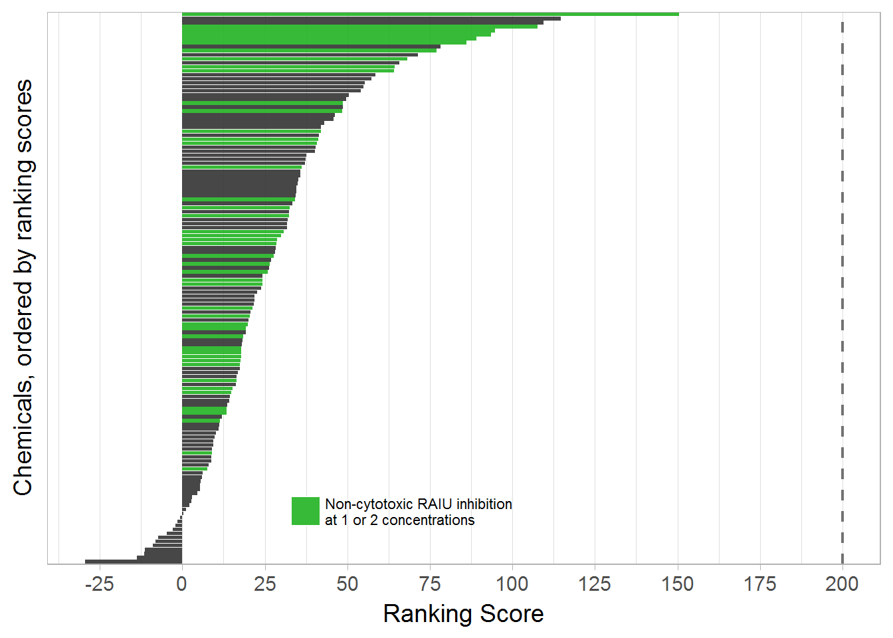

6 Rank Chemicals
To prioritize the chemicals for potential NIS inhibition activity, a ranking score was calculated using two metrics that take into account the potential confounding impact of cytotoxicity on identifying RAIU inhibition activity: 1) toxicity-adjusted area (TAA) and 2) the difference of median responses of RAIU and cytotoxicity at maximum tested concentration (Median-Difference). TAA was defined by the maximum concentration vertical line (right border), the significant threshold horizontal line for RAIU assay (top border), and the dose-response curves of RAIU and cell viability results. The numeric value of TAA is penalized when a chemical demonstrates strong cytotoxicity. Median-Difference was calculated using the median of cell viability responses minus the median of RAIU responses at the maximum testing concentration (usually 100 µM). Larger separations between RAIU and cytotoxicity are reflected in larger Median-Difference values. To rank test chemicals, NaClO4 was used as the reference to normalize the TAA and Median-Difference of each test chemical. Specifically, the TAA and Median-Difference values of NaClO4 positive control included on each of the 54 multi-concentration testing plates were first calculated to obtain the median of NaClO4 TAA and Median-Difference (150.03 and 95.67 respectively). Then the TAA and Median-Difference of test chemicals were normalized as the percentage of the median NaClO4 TAA and Median-Difference separately and then summed to obtain a chemical ranking score. The ranking score of 200 represents the potency of the referenced NaClO4.

Demonstration of TAA and Median-Difference
median(perchlorate_rank$taa)## [1] 151.0348median(perchlorate_rank$med_diff)## [1] 95.66618# calculate ranking metrics, normalize to sodium perchlorate
sum_tbl <- toxplot::rank_tcpl(mc_model, spid_chnm_table,
med_taa = median(perchlorate_rank$taa),
med_med_diff = median(perchlorate_rank$med_diff))
#write_csv(sum_tbl, "./output data files/Phase1_rank_table.csv")6.1 Ranking Plot
Use color to indicate chemicals that have significant RAIU but no significant cytotoxicity at any given concentration.
#check each concentration, and find concentrations that have sig RAIU but no sig cytotoxicity.
#get the median response for each chemical on each concentration
median_responses <- dt_mc_norm %>%
filter(wllt == "t") %>%
group_by(spid, conc, assay) %>%
summarize(med = median(nval_median)) %>% ungroup
cyto_positives <- median_responses %>%
filter(assay == 'Cytotox') %>%
mutate(positive_cyto = ifelse((med < 100 - sig_mc[[1,3]]), 1, 0))
raiu_positives <- median_responses %>%
filter(assay == 'RAIU') %>%
mutate(positive_raiu = ifelse((med < 100 - sig_mc[[2,3]]), 1, 0))
raiu_1_cyto_0 <- left_join(cyto_positives, raiu_positives, by = c("spid", "conc")) %>%
mutate(separation = ifelse((positive_raiu == 1 & positive_cyto == 0), 1, 0))
separation_spid <- raiu_1_cyto_0 %>%
filter(separation == 1) %>%
select(spid) %>%
unique %>%
mutate(sep = "Yes")
sum_tbl5 <- left_join(sum_tbl, separation_spid, by = "spid") %>%
mutate(sep = ifelse(is.na(sep), "No", "Yes")) %>%
filter(!(is.na(taa_norm)))
sum_tbl6 <- left_join(sum_tbl, separation_spid, by = "spid") %>%
mutate(sep = ifelse(is.na(sep), "-", "+")) %>%
filter(!(is.na(taa_norm)))
rs_plot2 <- ggplot(sum_tbl5) +
geom_col(aes(x=reorder(spid, ranking_score), y = ranking_score, fill = sep), alpha = 0.9, linetype = "solid") +
theme_light(base_size = 14) +
xlab("Chemicals, ordered by ranking scores") +
ylab("Ranking Score") +
geom_hline(yintercept = 200, alpha = 0.8, size = 0.8, linetype = "dashed", color = "gray32") +
theme(axis.text.y = element_blank(),
axis.ticks.y = element_blank()) +
scale_fill_manual(name = "",
values = c("gray20", "#21B321"),
breaks = c("","Yes"),
labels = c("No", "Non-cytotoxic RAIU inhibition\nat 1 or 2 concentrations")
)+
theme(legend.justification = c(0,1), legend.position = c(0.28, 0.18),
legend.title = element_text(size = rel(0.7)),
legend.text = element_text(size = rel(0.6)),
legend.background = element_blank()) +
coord_flip() +
scale_x_discrete(breaks = NULL) +
scale_y_continuous(breaks = seq(-25, 200, by = 25))
rs_plot2
# ggsave("./output plots/ranking_score.png", rs_plot2, dpi = 600, width = 4.5, height = 5.2, units = "in")
# rs_plot3 <- rs_plot2 +
# theme(legend.text = element_text(size = rel(0.7)),
# axis.title = element_text(size =rel(1.6)))
# rs_plot3
# ggsave("./output plots/ranking_score_slim.png", rs_plot3, dpi = 900, width = 4.0, height = 10, units = "in")6.2 Results Table for publication
6.2.1 Table 1 in ES&T paper
multi_results <- sum_tbl6 %>%
dplyr::select(spid, chnm, casn, AC50_prim, absEC50_prim, cyto_lim, ranking_score, sep)
## merge sum-tbl with spid_chnm_table, to include all single and multi-con results
spid_chnm_table <-
read_excel("./raw data files/EPA_11700_EPA-SLaws_ph1v2_150ul_20170125_key.xlsx")
#rename the column title to be compatible with tcpl package.
spid_chnm_table <-
spid_chnm_table %>% dplyr::select(EPA_Sample_ID, Aliquot_Concentration, CASRN, Preferred_Name)
names(spid_chnm_table) <- c("spid", "aliquot_conc", "casn", "chnm")
#calculate the actual cocnentration tested in single-con screening
#the unit will be convert from mM to Molar
spid_chnm_table <- spid_chnm_table %>%
mutate(test_conc = aliquot_conc / 2E5)
colnames(spid_chnm_table)## [1] "spid" "aliquot_conc" "casn" "chnm"
## [5] "test_conc"single_con_results <- spid_chnm_table %>%
mutate(hitc = ifelse(spid %in% ls169$spid, "+", "-"))
final_sum_tbl <- full_join(single_con_results, multi_results, by = c("spid", "chnm", "casn")) %>%
dplyr::select(spid, chnm, casn, test_conc, hitc, everything()) %>%
dplyr::select(-aliquot_conc) %>%
arrange(desc(ranking_score), desc(hitc))
colnames(final_sum_tbl) <- c("SPID", "Chemical", "CAS NO.", "Max Conc(M)", "Tested in Multi-Conc", "AC50", "absEC50", "Cytotox Point", "Ranking Score", "Non-cytotoxic RAIU inhibition at 1 or 2 concentrations")
knitr::kable(final_sum_tbl[1:20,],
caption = "Results for the top 20 ranked chemical samples that demonstrated significant RAIU inhibition in multi-concentration screening" )| SPID | Chemical | CAS NO. | Max Conc(M) | Tested in Multi-Conc | AC50 | absEC50 | Cytotox Point | Ranking Score | Non-cytotoxic RAIU inhibition at 1 or 2 concentrations |
|---|---|---|---|---|---|---|---|---|---|
| TP0001500G04 | Etoxazole | 153233-91-1 | 1.0e-04 | + | -5.917875 | -5.882295 | -4.324598 | 150.40664 | + |
| TP0001502E10 | Triphenyltin hydroxide | 76-87-9 | 1.0e-04 | + | -5.386793 | -5.388907 | -5.169301 | 114.69714 | - |
| TP0001501D03 | Niclosamide | 50-65-7 | 5.0e-05 | + | -6.954288 | -6.787996 | -6.914861 | 109.37954 | - |
| TP0001502G01 | 3-Iodo-2-propynyl-N-butylcarbamate | 55406-53-6 | 1.0e-04 | + | -5.089050 | -5.301357 | -4.795430 | 107.60665 | + |
| TP0001501E07 | PFOS | 1763-23-1 | 8.0e-05 | + | -4.746544 | -4.776923 | -4.090921 | 94.75458 | + |
| TP0001498G01 | PFOS | 1763-23-1 | 8.0e-05 | + | -4.722963 | -4.740131 | NA | 93.63201 | + |
| TP0001498B02 | Cyprodinil | 121552-61-2 | 1.0e-04 | + | -4.428222 | -4.429650 | NA | 89.11580 | + |
| TP0001501G03 | Rotenone | 83-79-4 | 1.0e-04 | + | -7.149873 | -6.219251 | -7.303662 | 86.15161 | + |
| TP0001501C09 | Pyridaben | 96489-71-3 | 1.0e-04 | + | -8.635381 | -7.488271 | -7.596914 | 78.17340 | - |
| TP0001500E11 | Methoxyfenozide | 161050-58-4 | 1.0e-04 | + | -4.784047 | -4.722900 | -4.676226 | 76.97244 | + |
| TP0001500E05 | 2-(Thiocyanomethylthio)benzothiazole | 21564-17-0 | 1.0e-04 | + | -4.325152 | -4.370695 | -4.908035 | 71.47611 | - |
| TP0001500D09 | Oxyfluorfen | 42874-03-3 | 1.0e-04 | + | -4.554565 | -4.385772 | NA | 68.26704 | + |
| TP0001499D08 | Captan | 133-06-2 | 9.5e-05 | + | -4.494527 | -4.501728 | -4.807092 | 65.78758 | - |
| TP0001502F03 | Fipronil | 120068-37-3 | 1.0e-04 | + | -4.569726 | -4.630450 | -4.922140 | 64.31604 | + |
| TP0001502E07 | Fluroxypyr-meptyl | 81406-37-3 | 1.0e-04 | + | -4.765877 | -4.735046 | -4.735038 | 64.09509 | + |
| TP0001500D03 | Cyhalofop-butyl | 122008-85-9 | 9.5e-05 | + | -5.469458 | -4.749693 | -5.071778 | 58.46669 | - |
| TP0001499A01 | Fenpyroximate (Z,E) | 111812-58-9 | 1.0e-04 | + | -6.788967 | -6.072622 | -7.091646 | 57.34488 | - |
| TP0001498C01 | Thiobencarb | 28249-77-6 | 1.0e-04 | + | -4.375865 | -4.335303 | -4.704910 | 55.19915 | - |
| TP0001500E07 | Emamectin benzoate | 155569-91-8 | 1.0e-04 | + | -4.876405 | -4.991496 | -5.177326 | 54.81987 | - |
| TP0001499C08 | Diphenylamine | 122-39-4 | 1.0e-04 | + | -4.739166 | -4.281879 | -5.591725 | 54.01489 | - |
#write_csv(final_sum_tbl, "./output data files/sum_tble_for_paper_new_ranking.txt")
# make sure use the excel text import tool to open this file, otherwise CAS NO. will be read wrong by excel as date.6.2.2 Table S1 in ES&T paper
Export supplemental summary table that includes all potency metrics.
sup_sum_tbl <- full_join(single_con_results, sum_tbl6,
by = c("spid", "chnm", "casn")) %>%
dplyr::select(spid, chnm, casn, test_conc, hitc, everything()) %>%
dplyr::select(-aliquot_conc, -index) %>%
arrange(desc(ranking_score), desc(hitc))
colnames(sup_sum_tbl) <- c("Sample ID", "Chemical", "CAS NO.", "Max Conc(M)", "Multi-Con Test", "TAA", "Median Difference", "AC50 Cytotox", "AC50 RAIU", "absEC80 Cytotox", "absEC50 Cytotox", "absEC80 RAIU", "absEC50 RAIU", "Cytotox point", "TAA Normalized", "Median_Difference Normalized", "Ranking Score", "Non-cytotoxic RAIU inhibition at 1 or 2 concentrations")
write_csv(sup_sum_tbl, "./output data files/Supplemental_summary_table.csv")